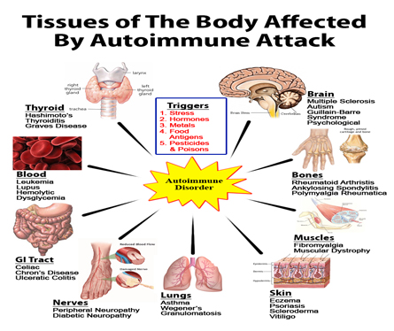
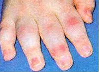
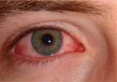
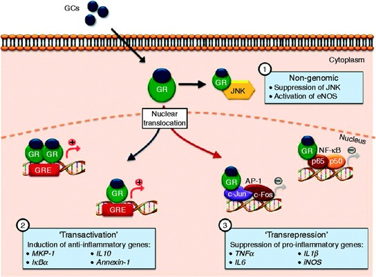

Indications:- Anti-Inflammatory

Deflazacort
SUSPENSION PRESENTATION:
Each 5 ml contains:
Deflazacort IP 6 mg


Deflazacort is a synthetic Glucocorticoid.
It is an oxazoline derivative of prednisolone with anti-inflammatory and immunosuppressive activity.
Deflazacort works by stopping the release of certain chemicals in your body which cause inflammation.
It suppresses the immune system and so can be used to treat autoimmune disorder.
WHAT IS AUTOIMMUNE DISORDER?
An autoimmune disorder occurs when the body's immune system attacks and destroys healthy body tissue by mistake. Tissues affected by autoimmune attack include lungs, blood, bones, brain, muscles etc.

Deflazacort is a synthetic Glucocorticoid that can be taken orally as suspension and can be used to treat wide variety of diseases. These include:
- 
- Severe allergic reactions
- Rheumatoid arthritis, juvenile arthritis, polymyalgia rheumatic
- Asthma
- Acute and lymphatic leukemia
- Cancer of bone marrow
- Cancer of lymph node 
- Inflammatory eye disorder e.g. optic neuritis
- Inflammatory disorder of kidney e.g. nephritic syndrome
- Inflammatory bowel disease e.g. ulcerative colitis
- Inflammatory skin disorder e.g. pemphigus vulgaris
- Inflammatory disease of skin and muscle i.e. dermatomyositis
- Organ transplant
- Idiopathic thrombocytopenia purpura
- Sarcoidosis
- Anemia caused by the immune system attacking red blood cells
- Duchene's muscular dystrophy
- Mixed connective tissue disease.

Deflazacort works by acting within cells to prevent the release of certain chemicals that are important in the immune system. These chemicals are normally involved in producing immune and allergic responses, resulting in inflammation. By decreasing the release of these chemicals in particular area, inflammation reduced. This can help control a wide number of disease states characterized by excessive inflammation. These include severe allergic reactions, inflammation of lungs in asthma and inflammation of joints in arthritis.

Absorption:
Deflazacort is well absorbed after oral administration and is immediately converted to pharmacological active metabolite by plasma esterase, which achieves peak plasma concentration in 1.5 to 2 hours.
Protein Binding: 40%
Metabolism: Deflazacort metabolize in liver to an active metabolite D-21-OH.
Elimination Half-Life: 1.1 - 1.9 h
Route of Elimination: Kidney (70% via urine and 30% through feces)

Deflazacort is a Glucocorticoid. Its anti-inflammatory and immunosuppressive effects are used in treating various diseases.

Deflazacort can cause fluid and salt retention and so may oppose the effects of following medicine
- Antihypertensive medicines used to treat high blood pressure
- Diuretics e.g. furosemide.
There may be an increase chance of level of potassium in the blood falling too low (hypokelemia) if Deflazacort is used in combination with any of the following medicines, which can also lowers the amount of potassium in blood:
- Acetazolamide
- Amphotericin
- Loop diuretics e.g. furosemide
- Theophyllin
- Beta agonists e.g. salbutamol, terbutaline
The following medicine may increase the removal of Deflazacort from the body, thus reducing its effects. You may need a large dose of Deflazacort if you are also taking any of these medicines:
- Barbiturate e.g. Phenobarbital
- Carbemazepine
- Phenytoin
- Rifampicin
- Primidone
- The effect of corticoids may be reduced in the three to four days following use of Oral contraceptives (mifepristone).
- Deflazacort may enhance the effect of anti-coagulant medicine such as warfarin. There should be proper monitoring of the blood clotting time of the patient taking anticoagulant with Deflazacort.
- Deflazacort may increase blood sugar levels and so may oppose the blood sugar lowering effect of antidiabetic medicines. People with diabetes may need an increase in their dose of insulin or antidiabetic tablets.

Metabolic: Increased blood sugar, increased appetite and weight gain.
Gastrointestinal:Indigestion, abnormal bloating, nausea, ulceration in the stomach or intestine, inflammation of pancreas and throat ulcer.
Musculoskeletal: Thinning of bones.
Skin: pimples, brushing, stretch marks, increased sweating, change in pigmentation and increased hair growth.
CNS: Mood changes including irritability, depression and suicidal thoughts, psychotic reactions, anxiety, confusion, memory loss and sleep disturbance.
Heart: elevated blood pressure.
Miscellaneous: Blood clot events and hiccups.

- Contradicted in patients who are receiving immunosuppressive vaccines and who have infections and hypersensitivity.
- Deflazacort crosses the placenta which increases the risk of fetal and neonatal adrenal suppression. So, it must be contradicted in pregnancy.
- It should not be use in people with widespread infection, unless this is being treated with specific anti-infective.
- You must not stop taking this medicine suddenly if you have taking it for more than three weeks. This is because long term use of corticosteroid can suppress the natural production of corticosteroids by the adrenal glands, which means that the body becomes temporarily reliant on the medicine. When it is the time to stop treatment the dose should be tapered down gradually, to allow the adrenal glands to start producing adequate amounts of natural steroids again.
- Corticosteroids decrease the body's natural immune and inflammatory response. They may increase your susceptibility to infection and can also mask the symptoms of infections, making you think they are less serious than they are. For this reason, it is important to consult your doctor if you get any signs of infection during treatment.
- Children and adolescents having long-term treatment with this medicine should have their growth regularly monitored.
- Deflazacort should be taken in the morning to mimic the natural production of corticosteroids by the body. They should be taken after food to minimize irritation to the stomach.

-
" For Us Quality Means Doing It Right When No One Is Looking"
-
"Wherever the art of Medicine is love, there is also a love of Humanity "